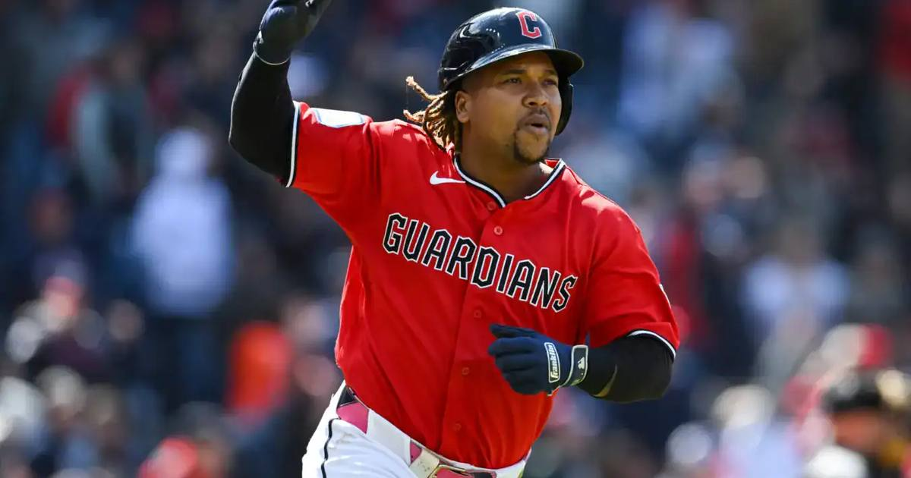

Guardians beat White Sox 9-5, force winner-take-all ALDS Game 5
Down 2-0, Cleveland ripped off a six-run sixth — Bailey and Ramirez homers, a Bazzana tying double — to win 9-5 and force Game 5 Saturday in Cleveland.

Disclosure: this post contains affiliate links. I earn a commission on qualifying purchases.
The White Sox struck first
Chicago finally broke through in the third on a bases-loaded walk to Munetaka Murakami and a pinch-hit sacrifice fly from Sam Antonacci (live updates), taking a 2-0 lead in Game 4 at Rate Field. An ALCS berth — and a trip to Tampa on Monday to face the Rays — was six innings away.
The Guardians answered
Down 2-0 into the fifth, Cleveland got home runs from Patrick Bailey and Jose Ramirez to tie it, then pushed a third run across to go ahead 3-2. The White Sox responded with two of their own in the bottom of the fifth to retake the lead 4-3 — and then the sixth inning happened.
The six-run sixth
Cleveland plated six runs in the top of the sixth to take a 9-4 lead and break the game open: Travis Bazzana's score-tying double, Bailey's go-ahead RBI single, an RBI infield single from Ramirez, a Chase DeLauter single to right, and a two-run single from Jo Adell capped it. It's the first time Cleveland has scored at least nine runs in back-to-back playoff games since Games 3-4 of the 1997 World Series.
Miguel Vargas homered in the ninth to make it 9-5, but Gavin Williams closed it out.
Winner-take-all Saturday
The White Sox won the first two games on the road and looked to be rolling, but the Guardians took Games 3 (9-3) and 4 in Chicago to force a Game 5 on Saturday night at Progressive Field — with Williams going on full rest. Since MLB introduced the best-of-five Division Series in 1995, only seven teams have completed the comeback after falling behind 2-0.
### By the numbers
• Final: Guardians 9, White Sox 5
• Decisive inning: 6-run top of the 6th
• Series: tied 2-2; Game 5 Saturday at Progressive Field
• Winner opens the ALCS: Monday in Tampa vs. the Rays
Gear up: [Fanatics](https://fanatics.93n6tx.net/WOLjqe) via Fanatics